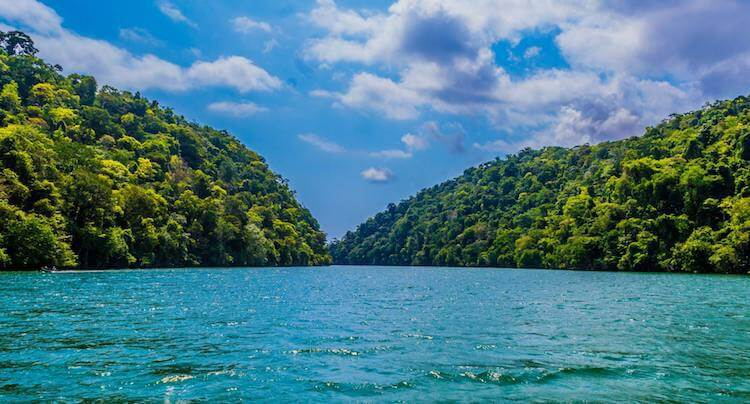
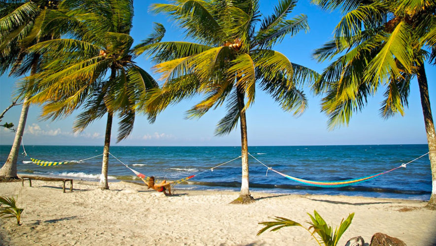
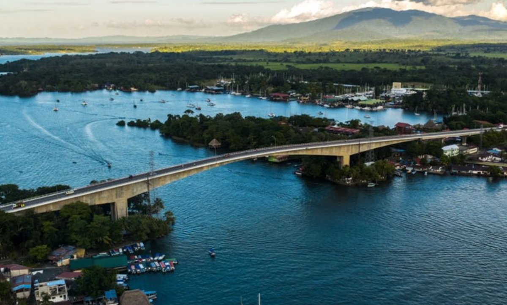
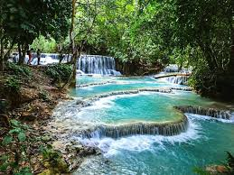
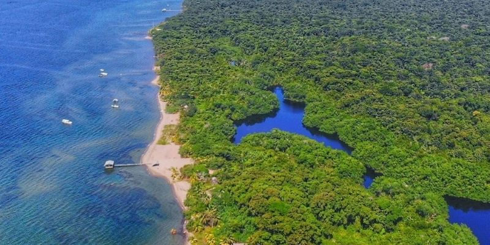
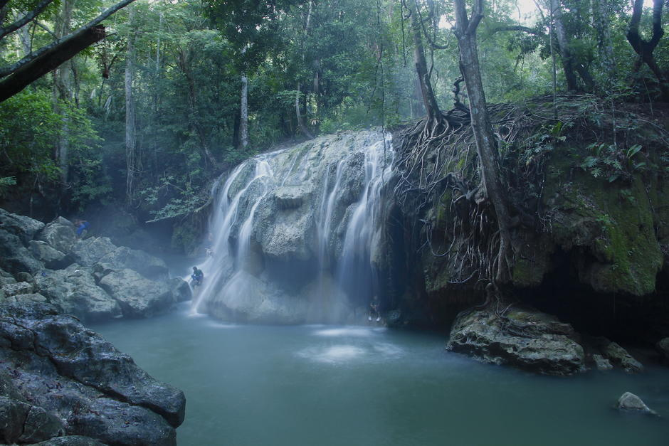

Descubre Izabal
Explora Izabal de una manera diferente!
Explora Izabal

Lago de Izabal
El lago más grande de Guatemala

Playa Blanca
Aguas cristalinas

Río Dulce
Paraíso navegable

7 Altares
Cascadas y pozas rodeadas de selva

Punta de Manabique
Reserva virgen, fauna única

Aguas Termales
Pozas naturales de agua caliente

Sendero las escobas
Cascadas, puentes y aventura selvática